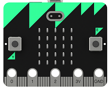
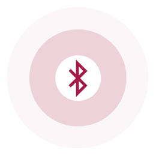
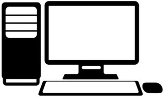

Bluetooth Wally - Step1
We are leveraging the bluetooth web api to connect with the bbc:microbit and then rotate Wally thanks to the microbit accelerometer.
Let's try it!
Instruction 1
You need to have a bluetooth receiver on your PC/Mac and it should be activated.
Instruction 2
Clic the start button to pair a running, bluetooth enabled BBC:Microbit.
To enable you BBC:Microbit for Bluetooth, download this .hex file and copy it into you microbit.


